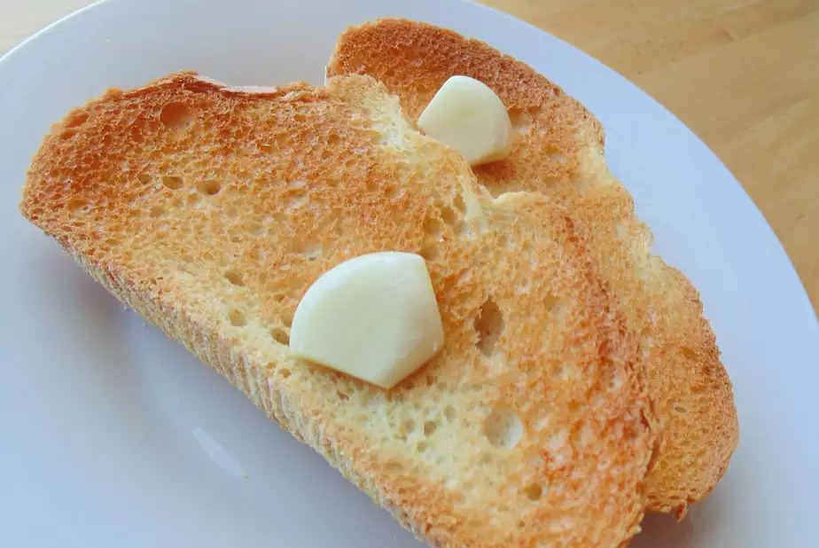

Garlic Toast

Description
- cook: 5 mins
- total: 15 mins
- prep: 10 mins
- Servings: 4
Ingredients
- 1/2 loaf French baguette, cut into 1/2 inch slices
- 6 cloves garlic, halved
Directions
- Set oven rack about 6 inches from the heat source and preheat the oven's broiler. Arrange baguette slices on a baking sheet.
- Toast in preheated oven until golden brown, 5 to 10 minutes.
- Rub garlic halves on warm bread.